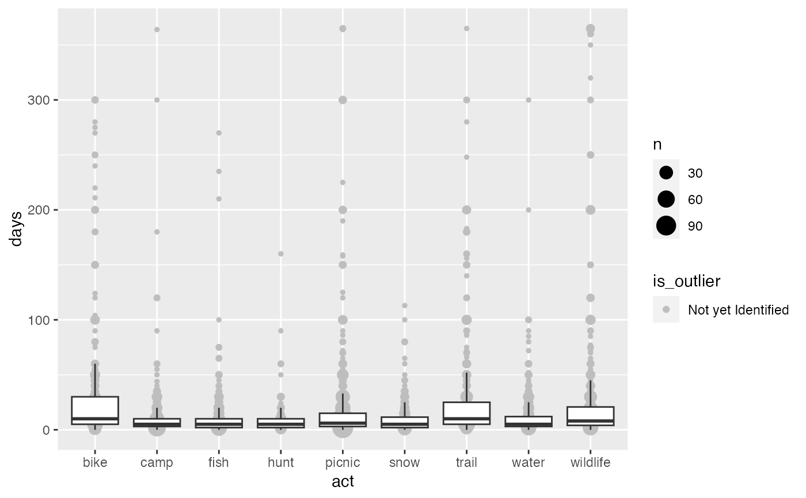
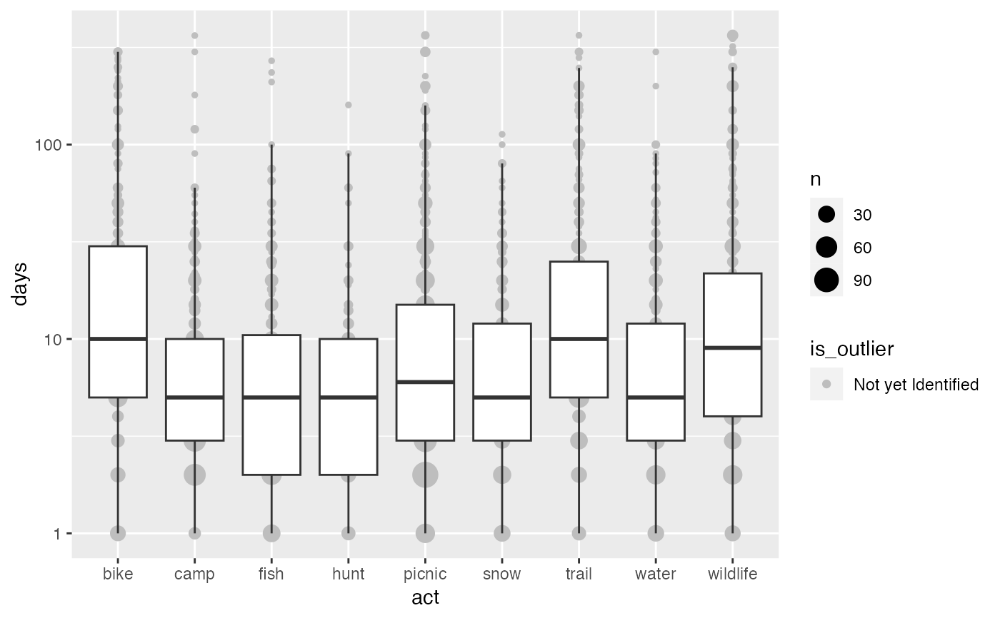
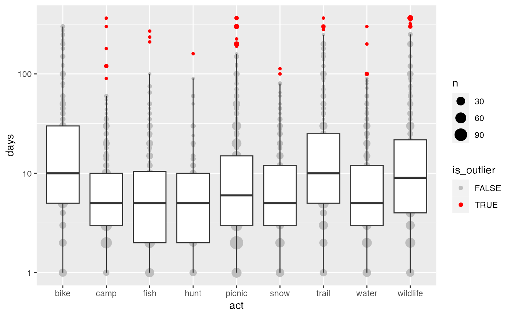

Returns a logical vector where TRUE indicates outliers.
Usage
outlier_tukey(
x,
k = 1.5,
ignore_lwr = FALSE,
apply_log = FALSE,
ignore_zero = FALSE
)
outlier_tukey_top(x, k = 1.5, apply_log = FALSE, ignore_zero = FALSE)Arguments
- x
input values to check
- k
the iqr multiplier that determines the fence level. Increasing will make outlier identification less strict (& vice-versa)
- ignore_lwr
If TRUE, don't use the lower fence for identifying outliers
- apply_log
If TRUE, log transform input values prior to applying tukey's rule. Useful since distributions often have a log-normal shape (e.g., spending)
- ignore_zero
If TRUE, will exclude zero values from IQR & flagging. Note that zeroes will automatically be ignored if apply_log = TRUE
See also
Other functions for identifying outliers:
outlier_mean_compare(),
outlier_pct(),
outlier_plot()
Examples
library(dplyr)
#>
#> Attaching package: ‘dplyr’
#> The following objects are masked from ‘package:stats’:
#>
#> filter, lag
#> The following objects are masked from ‘package:base’:
#>
#> intersect, setdiff, setequal, union
data(svy)
# take a look at the days variable
outlier_plot(svy$act, days, act)

outlier_plot(svy$act, days, act, apply_log = TRUE)

activity <- group_by(svy$act, act) %>% mutate(
is_outlier = outlier_tukey(days, ignore_zero = TRUE, apply_log = TRUE),
# in case we want to topcode the outliers:
topcode_value = outlier_tukey_top(days, apply_log = TRUE),
days_cleaned = ifelse(is_outlier, NA, days)
) %>% ungroup()
# summarize
outlier_plot(activity, days, act, apply_log = TRUE, show_outliers = TRUE)

outlier_pct(activity, act)
#> # A tibble: 8 × 4
#> # Groups: act [8]
#> act is_outlier n pct_outliers
#> <chr> <lgl> <int> <dbl>
#> 1 camp TRUE 6 0.479
#> 2 fish TRUE 3 0.240
#> 3 hunt TRUE 1 0.0799
#> 4 picnic TRUE 15 1.20
#> 5 snow TRUE 2 0.160
#> 6 trail TRUE 4 0.319
#> 7 water TRUE 4 0.319
#> 8 wildlife TRUE 13 1.04
outlier_mean_compare(activity, days, days_cleaned, act)
#> # A tibble: 9 × 3
#> act days days_cleaned
#> <chr> <dbl> <dbl>
#> 1 bike 31.6 31.6
#> 2 camp 11.2 8.58
#> 3 fish 11.6 9.40
#> 4 hunt 9.37 8.34
#> 5 picnic 17.5 13.1
#> 6 snow 9.99 9.29
#> 7 trail 28.4 25.5
#> 8 water 12.4 10.5
#> 9 wildlife 30.5 21.8